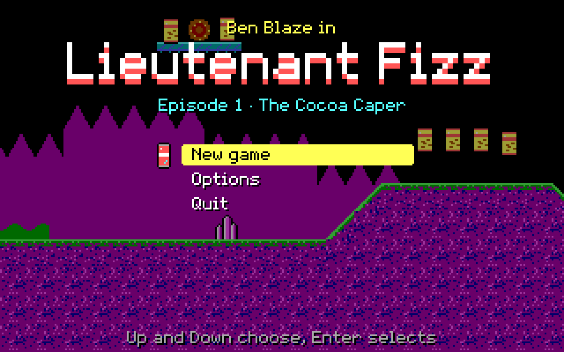
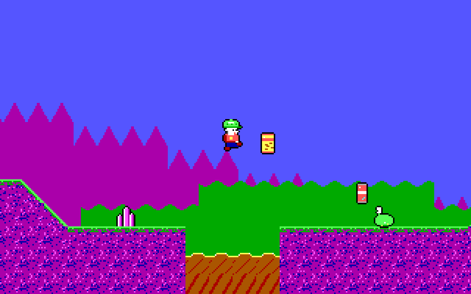
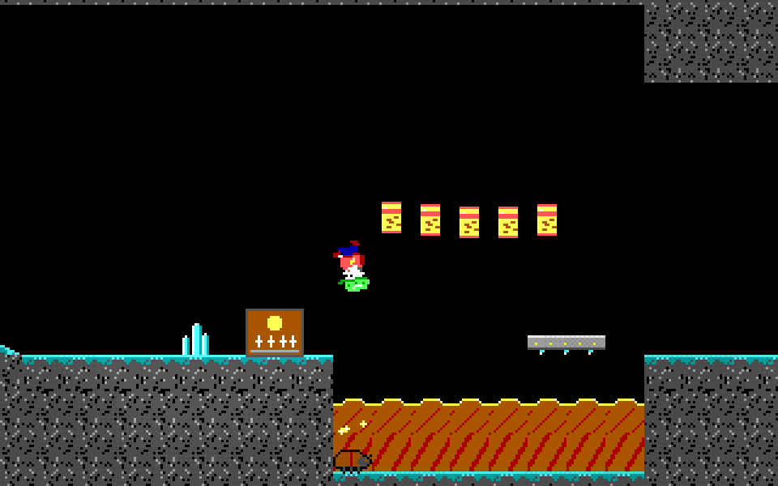
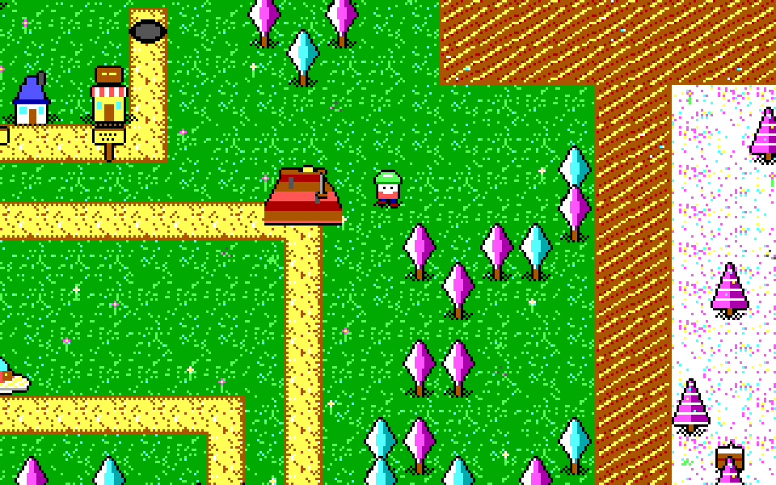
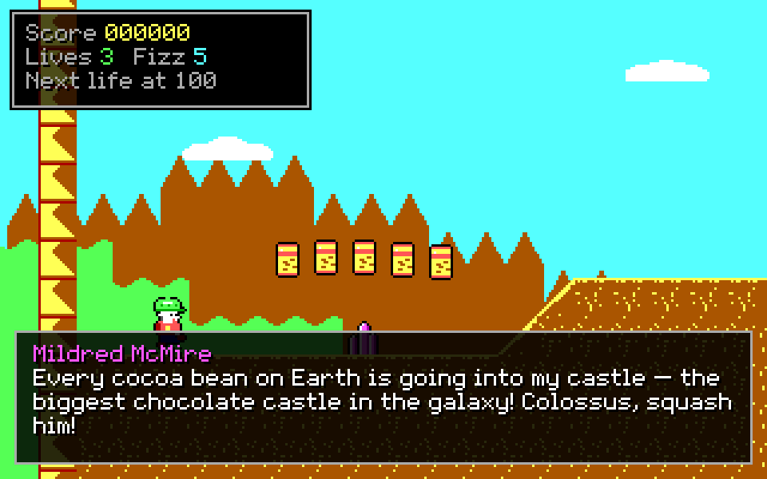
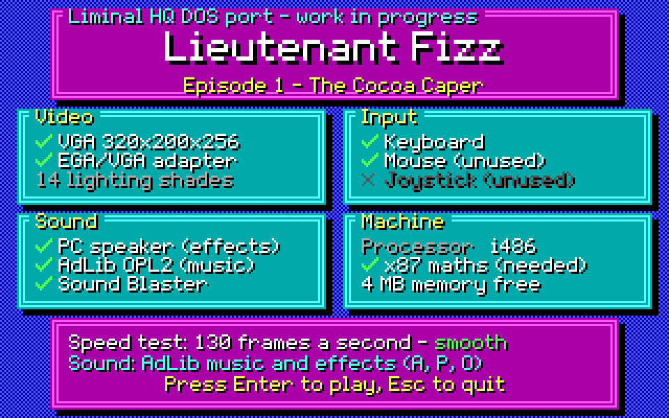

Play Episode 1 in your browser

A click starts the game and the sound. A keyboard is needed: this page has no touch controls. The game starts at a system check; press Enter to continue to the title.
Keys
| ← → ↑ ↓ or W A S D | Move (Up and Down also climb and look) |
|---|---|
| Ctrl or Z | Jump |
| Alt or X | Pogo stick |
| Space or C | Fire |
| Enter | Confirm: enter a level marker, dismiss a card |
| Esc | Pause menu, and back in a menu |
| Backspace | Back to the overworld map |
| PgUp PgDn | Previous or next level |
| R N M E | Restart the level; night mode; music on or off; effects on or off |
On the system check, A plays everything on AdLib, M puts the music on AdLib and the effects on the PC speaker, P uses the PC speaker alone and O turns sound off. Options has frame rate and detail settings if it runs slowly. In the browser, saves and options last until the page is reloaded.
What this is
Lieutenant Fizz — Episode 1: The Cocoa Caper for MS-DOS. The game's own Rust simulation, from liminal-hq/lieutenant-fizz, runs as a 32-bit DOS program in VGA mode 13h (320 × 200, 256 colours) with AdLib music and effects, or PC-speaker effects. The page runs it in an emulated DOSBox through js-dos. The program is under 1 MB, so it fits a 1.44 MB floppy with room to spare.
It matches the web build's simulation exactly (800 checked state hashes), so the levels, enemies and bosses behave the same. It is not finished: the opening cinematic, the ending and credits, and the controls screen are not in yet, and it has not run on real hardware. The status page has the full list.
Screenshots





